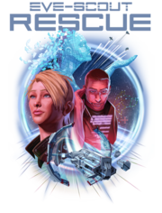

ESR:EvE-Scout Rescue: Difference between revisions
Vega Blazar (talk | contribs) (updated admin team list to match evescoutrescue.com list) |
Vega Blazar (talk | contribs) |
||
| (2 intermediate revisions by 2 users not shown) | |||
| Line 14: | Line 14: | ||
* https://evescoutrescue.com/ - Public web site | * https://evescoutrescue.com/ - Public web site | ||
* https://evescoutrescue.com/911 - Stranded pilot needs help but you don't know what to do? Give them this URL! | * https://evescoutrescue.com/911 - Stranded pilot needs help but you don't know what to do? Give them this URL! | ||
* [https:// | * <code>[https://discord.com/channels/152437634927427584/435104068613046272 #stranded-pilots-lounge]</code> - Discord channel for stranded capsuleers. '''Note:''' This channel is PUBLIC, so please no OPSEC info! | ||
* <code>[https://discord.com/channels/152437634927427584/1097827204982898778 #esr-lounge]</code> - Discord channel for Signaleers to chat about any and all aspects of the ESR Division. Ask your questions here! | |||
=== Admin Team === | === Admin Team === | ||
| Line 44: | Line 45: | ||
# [[ESR:EvE-Scout_Rescue_Cache_Shared_Bookmarks | ESRC Shared Bookmarks]] - When possible '''use the bookmarks'''! It's much easier. | # [[ESR:EvE-Scout_Rescue_Cache_Shared_Bookmarks | ESRC Shared Bookmarks]] - When possible '''use the bookmarks'''! It's much easier. | ||
# [[Public:Bounce_Method_Instructions_(en) | Bounce Method]] | # [[Public:Bounce_Method_Instructions_(en) | Bounce Method]] | ||
=== Search and Rescue (SAR) === | === Search and Rescue (SAR) === | ||
Latest revision as of 22:01, 28 December 2023
| EvE-Scout Rescue |
|---|
|  |
{kind=link}
EvE-Scout Rescue (ESR) is one of the oldest divisions in Signal Cartel and consists of two programs:
- EvE-Scout Rescue Cache (ESRC)
- Search and Rescue (SAR)
Helping Lost Explorers[edit]
The EvE-Scout Rescue (ESR) Division was created to help stranded capsuleers in Wormhole Space. Previously, for pilots without probes, the only way out was to self-destruct or try their luck with the locals. Now they can request help from the ESR 911 Operator team.
{kind=link}
While all the nitty gritty is covered below, Katia Sae made a great blog post that gives a general overview of the processes: Stranded in a wormhole? What now?
- https://evescoutrescue.com/ - Public web site
- https://evescoutrescue.com/911 - Stranded pilot needs help but you don't know what to do? Give them this URL!
#stranded-pilots-lounge- Discord channel for stranded capsuleers. Note: This channel is PUBLIC, so please no OPSEC info!#esr-lounge- Discord channel for Signaleers to chat about any and all aspects of the ESR Division. Ask your questions here!
Admin Team[edit]
EvE-Scout Rescue Cache (ESRC)[edit]
Signal Cartel pilots travel to all corners of New Eden. This includes Wormhole Space. Many of our pilots opt to carry small rescue packages with them to sow and tend during their travels across J-Space for stranded travelers. These travelers can request help from ESR to locate one of our caches to enable them to safely return to the comforts of K-Space.
- Full Guide
- Quick Reference Guide
- ESRC Data Entry (aka Allison)
- How to locate our Rescue Caches (two methods):
- ESRC Shared Bookmarks - When possible use the bookmarks! It's much easier.
- Bounce Method
Search and Rescue (SAR)[edit]
In situations where no rescue cache is present or where those options do not provide any help to the stranded pilot, the SAR team takes over and rescues the pilot after an escape route is located.
- Full Guide
- SAR Overview Page
- ESRC/SAR Agent Initial Contact Flowchart
- SAR Ship Replacement Program (SRP)
- SAR, The Credo, and You 🔥
Hall of Heroes[edit]
Storm Tracking Service[edit]
While not officially overseen by ESR, the Signal Cartel Storm Tracking Service conveniently resides on the EvE-Scout Rescue website for the use and public benefit of all of New Eden. The "New Eden Weather Report" is visible at the bottom of the ESR homepage in the form of a crawler. It displays the Metaliminal Storms across K-space, as reported by our storm spotting Signaleers.
Signal Cartel Co-Pilot (Allison)[edit]
The whole ESR Division is supported by our co-pilot, Allison, who helps with all aspects of both ESR programs from providing cache data, mapping, to alerting our teams when stranded pilots are located. Allison also provides the Storm Tracker interface that enables our Signal Cartel Storm Tracking Service to publicly report the weather.
Reference[edit]
Original forum post: Directory of Important Info, ESR Edition (DII-ESR)